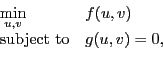
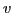

Parameter estimation, inverse problems, and optimal control problems frequently appear in physical applications and can be cast as constrained optimization problems with partial differential equation constraints. In particular, we are interested in solving discretized optimization problems of the form

where the state variable

, andIn this talk, we will discuss the linearly-constrained augmented Lagrangian method available in the Toolkit for Advanced Optimization (TAO) for solving PDE-constrained optimization problems. This method computes the direction in two phases, a Newton direction to reduce the constraint violation and a reduced-space direction to improve the augmented Lagrangian merit function. The reduced-space direction is computed from a limited-memory quasi-Newton approximation to the reduced Hessian matrix. This method requires a minimal amount of information from the user to solve the optimization problem. The computational time for the method is dominated by computing the necessary directions using iterative methods and preconditioners supplied by the user for solving the linearized forward and adjoint problems. The parallel performance is strongly influenced by the parallel performance of these solves.
To evaluate the performance of our linearly-constrained augmented Lagrangian method, we use the Haber-Hansen test problems, which include elliptic, parabolic, and hyperbolic partial differential equations, and their corresponding discretizations. We implemented parallel versions of these applications in the Toolkit for Advanced Optimization to investigate the scalability of the method on high-performance architectures. Results from these studies will be presented.
Our algorithms and test problems are available in the latest release of the Toolkit for Advanced Optimization, which also includes methods for derivative-free optimization, unconstrained and bound-constrained optimization problems using derivative information, and complementarity problems and variational inequalities on high-performance architectures.